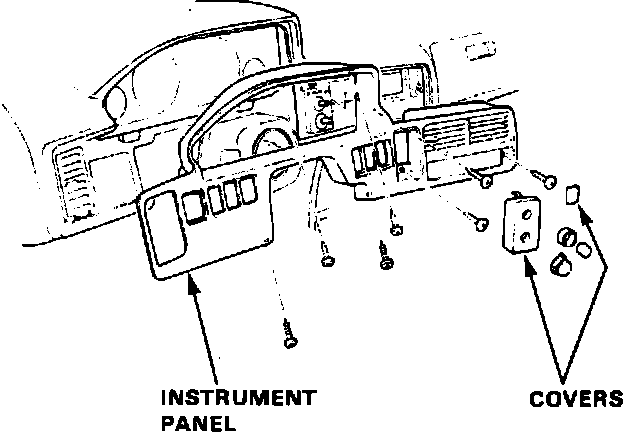

Instrument Cluster / Carrier: Service and Repair
Fig. 4 Instrument Panel Removal:

1. Disable coded theft protection system as described under Accessories and Optional Equipment / Antitheft and Alarm Systems / Service and Repair.
2. On models equipped with airbag, disarm airbag system as described under Air Bags and Seat Belts / Air Bags (Supplemental Restraint Systems) / Airbag System Disarming.
3. Remove seven instrument panel attaching screws, then pull rearward, Fig. 4.
4. Disconnect switch electrical connectors.
5. Remove four instrument cluster attaching screws, then pull rearward.
6. Disconnect speedometer cable and electrical connectors, then remove instrument cluster.
7. Reverse procedure to install.
8. Restore coded theft protection system and rearm airbag.